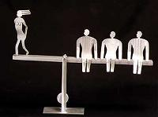

پذيرش > تریبون > مقالات > حقوق زنان، منافع مردان!


 حقوق زنان، منافع مردان! حقوق زنان، منافع مردان!
18 اردیبهشت 1386 - كاوه كرمانشاهی - نسخه قابل چاپ
بارها پيش آمده هنگامی كه در محافل دوستانه يا خانوادگی بحث از حقوق بشر ـ با تأكيد بر حقوق زنان ـ به ميان آورده و با اشاره به قوانين تبعيضآميز و عرفهای نادرست در اين زمينه از لزوم تلاش در جهت تغيير آنان سخن گفتهام، از سوی مخاطبان ـ اكثراً مردها و بعضاً زنان ـ مورد پرسش قرار گرفتهام كه قصدم از مطرح كردن اين بحثها چيست؟ چه هدفی را از همراهی با جنبش زنان دنبال میكنم و نهايتاً از تغيير اين قوانين و عرفهای به اصطلاح غلط چه سودی نصيب من به عنوان يك مرد خواهد گشت؟!
شوربختانه برخی از مردم با برداشتی تنگنظرانه از آنچه در پيرامونشان میگذرد چنين تصور میكنند كه هر آنچه مستقيماً به ايشان ربط ندارد و ظاهراً بر زندگی فردیشان تأثيری نمیگذارد از شمول مشكلات جامعه خارج است و با اين استدلال كه فلان موضوع يا مسئله به لحاظ جنسيتی، مليتی، مذهبی، طبقاتی و ... شامل حال ما نمیگردد از زير بار مسئوليت پرداختن به مشكل و تلاش در جهت رفع آن و يا حتی فكر كردن در اين باره شانه خالی میكنند و با تأكيد بر جنسيت يا تعلقات ملی و دينی و يا جايگاه طبقاتی خود سعی در تنيدن پيلهای به دور خويش دارند تا به واسطهی آن خود را از جامعه جدا كرده و از زير بار مسئوليتی كه انسانيت بر دوششان نهاده فرار كنند.
چه خوش گفت حضرت سعدی و چه زيبا بر سردر سازمان ملل اين سخن شيخ اجل نقش بست كه: بنی آدم اعضای يكديگرند / كه در آفرينش ز يك پيكرند / چو عضوی به درد آورد روزگار / دگر عضوها را نماند قرار / تو كز محنت ديگران بی غمی / نشايد كه نامت نهند آدمی
انسان خردمند با نگاهی ژرف به محيط پيرامونش و دركی عميق از موضوعات پيشآمده در زندگي اش در خواهد يافت كه تأثيرگزاری و تأثيرپذيری او بر و از محيط جامعه به گونهای آشكار است و انعكاس ناكامیها و كاميابیهای ديگر افراد جامعه در زندگی وی چنان نمودی خواهد داشت كه نگاه تيزتر و توجه بيشتر او را در مواجه با وضعيت موجود و رويدادهای پيشآمده طلب میكند. حال آنكه در اين ميان تنها كسانی توانايی مشاهده و درك اين واقعيت را ندارند كه گستردگی افق ديدشان به درازای نوك بينیشان محدود میشود.
مسئلهی عرفهای نادرست جامعه و قوانين تبعيضآميز حاكم كه در قبال زنان اعمال میگردد نيز از آن دسته مشكلاتی است كه هر چند به ظاهر مختص زنان است و تنها در مورد آنان به كار گرفته میشود اما در واقع تأثير مخرب خود را بر كل جامعه كه نيمی از اندامان آن مردها هستند خواهد گذاشت. و شدت اين تأثير به حدی است كه نمیتوانيم به آن بیتوجه باشيم و به راحتی از كنار آن عبور كنيم.
حال اگر به عنوان يك مرد به اين نكتهی مهم نيز توجه داشته باشيم كه آن زنی كه از او سخن میگوئيم نه يك بيگانه كه فردیست كه در تمامی دوران زندگیمان در مقام مادر، همسر، فرزند و يا حتی يك دوست همواره در كنارمان قرار دارد و با ايشان همزيستی تنگاتنگی را خواهيم داشت شايد عمق فاجعه را بيشتر درك كنيم و نسبت به مشكلات وی حساستر گرديم و در راه از ميان برداشتن آنان همراه با زنان گامهای بلندتر و مستحكمتری را برداريم.
گذشته از اين، اصل مهم در اينجا همان جامعه است كه رشد و پويندگی اش در گرو حضور شهروندانی آگاه و مديرانی تواناست كه آن نيز مگر در سايهی برابری شهروندان و شايستهسالاری مديران امكانپذير نخواهد بود و در كشوری كه بر طبق قوانين و عرفهای غلط آن نه تنها نيمی از مردم از حضور مؤثر در جامعه و رسيدن به پستهای كلان در مديريت محروم هستند كه تأثير آن قوانين و عرفها بر زندگی فردی و خانوادگی و اجتماعی زنان و مشكلاتی كه از اين طريق برای آنان به وجود خواهد آمد مانعی جدی در راه رسيدن به جامعهی مدنی خواهد بود.
از اين روست كه سخن گفتن از حقوق زنان از سوی من مرد نه از سر دلسورزی و نه به نشانهی ترحم نسبت به وی و همراهيم با جنبش زنان نه به تعبير برخی كوتهفكر ـ كه همكاری و روابط دوستانه و اخلاقمدارانهی دو جنس بشر در قالب يك تشكيلات يا جنبش اجتماعی در مخيلهی كوچكشان نمیگنجد ـ به منظور ... ؟؟؟ !!! كه برای استفاده از تمامی توانايیها و استعدادهای موجود برای ساختن جامعهی مدنی با شهروندانی برابر و آگاه و مديرانی شايسته و توانا است.
آری من در پی احقاق حقوق زنان، منافع خويش را به عنوان يك انسان میجويم.
پینوشت...
اشارهای كه در اين نوشتار كوتاه به جنسيت، مليت، مذهب و ... شد نه از سر انكار و تقبيح آنان كه تعلق، وابستگی و باور به اين موارد طبيعی و پذيرفتنیست. اما مسئله زمانی شكل غلط به خود میگيرد كه اين موارد يا سبب ايجاد حصار بين فرد با جامعه و يا در شكل فاجعهبارتری باعث ايجاد توهم برتری در يك شخص، يك ملت، پيروان يك آئين و يا وابستگان به يك طبقهی خاص از جامعه گردد.
كرماشان ـ ارديبهشتماه 1386
ارسال به
بالاترین
،
توییتر
،
فریندفید
،
فیسبوک
در همين بخش :
 دهمین دورۀ مراسم تندیس صدیقه دولت آبادی ۱۳۹۲ دهمین دورۀ مراسم تندیس صدیقه دولت آبادی ۱۳۹۲
کارت پستالهایی به بهانهی هشت مارس و به یاد همهی مبارزین راه برابری
بیانیه بیش از 350 تن از مدافعان حقوق زنان به مناسبت روز جهانی زن؛ زنان هر روز فرودستتر میشوند
لباسی که برای تن ما دوخته اند! /اعظم بهرامی
چالشها و چشمانداز فعالیت مدنی زنان
ديگر بخش ها :
طرح یک میلیون امضا
|
مقالات
|
سایت نوشته ها
|
اخبار
|
گزارش كمپين
|
گفت و گو
|
علیه سکوت
|
كوچه به كوچه
|
نامه های شما
|
گزارش ویژه
|
گفتگو با اعضا
|
ویژه سالگرد کمپین
|
تصویر برابری
|
دل آرام علی
|
تریبون
|
مقالات
|
تاریخ شفاهی
|
خارج از چارچوب
|
کتابخانه
|
درباره کمپین
|
کمپین در شهرها
|
کمپین در بند
|
صدای تغییر
|
ویژه 22 خرداد
|
لایحه حمایت از خانواده
|
گالری
|
عشا مومنی
|
امیر یعقوبعلی
|
خدیجه مقدم
|
راحله عسگری زاده و نسیم خسروی
|
پروین اردلان،جلوه جواهری، مریم حسین خواه، ناهید کشاورز
|
زینب پیغمبرزاده
|
سعیده امین، سارا ایمانیان، محبوبه حسین زاده، ناهید کشاورز و همایون نامی
|
احترام شادفر
|
نسیم سرابندی زاده،فاطمه دهدشتی
|
وبلاگ مهمان
|
پرونده خرم آباد
|
دستگیری ها
|
مریم مالک
|
پرستو اللهیاری
|
مهرنوش اعتمادی
|
سمیه رشیدی
|
Other Languages
|
همراهان
|
«فراخوان کمپین ده روز با بهاره هدایت»
| English
|